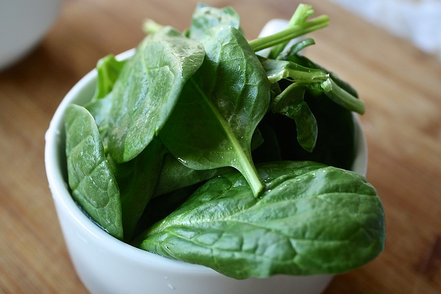
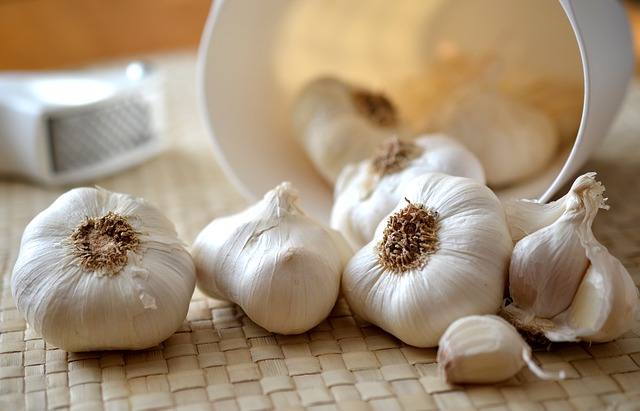
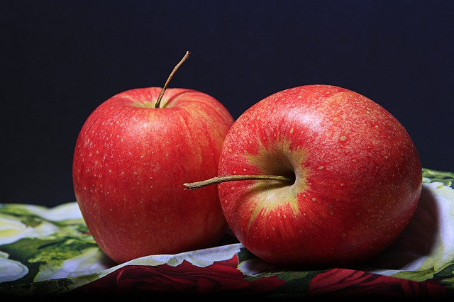
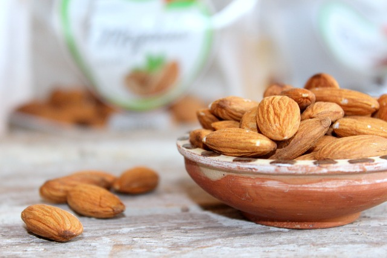

Top 10 Healthiest Foods In The World
What is actually healthy eating? It is consuming a variety of foods that give all essential nutrients for your body. But choosing the right foods from different groups in not at all an easy task. The followings are 10 healthiest foods in the world.
10. Dark Chocolate

The moderate consumption of dark chocolate has numerous health benefits. The quality chocolate contains many nutrients including Iron, Magnesium, Fiber and Copper. But you should make sure that you only consume the chocolate in moderation. Because chocolate is rich in calories and over consumption leads to weight gain.
Health benefits of dark chocolate
- The flavonoid compounds present in cocoa have antioxidant effects. It can protect the cells from damage that is caused by the action of free radicals. In that way the dark chocolates can protect against heart disease.
- The flavonoids in dark chocolate can reduce the level of harmful LDL cholesterol. It lowers the risk of heart attack.
- The dark chocolate intake will improve the blood flow to the brain and skin. It improves your brain function and also great for a healthy skin.
- The serotonin chemical in dark chocolate act as anti-depressant agent and improves your mood.
9. Banana
The creamy and sweet bananas have many health benefits that you thought. The fresh bananas available year around and you should add it to your daily diet. Because bananas can relieve morning sickness, reduce tension, cure diabetes and improve heart health. It is free of fat and contain rich in nutrients such as manganese, vitamin C, potassium, dietary fiber, iron, vitamin A and protein.
Health benefits of banana
- The daily intake of bananas can reduce the chances of asthma.
- The high level of Vitamin B-6 present in bananas can strengthen your nervous system and boost the production of white blood cells.
- The fiber content in bananas helps to boost the digestion process.
- As rich in potassium bananas can protect against stroke and heart attack.
- The Vitamin C in bananas can prevent the formation of free radicals which leads to cancer.
- Bananas can also boost your memory and protect against diarrhea.
8. Sweet Potatoes
The sweet potatoes are a readily available, inexpensive and nutrient rich vegetable in the world. They are a good source of Vitamin A, Vitamin D, Vitamin B-6, potassium and calcium. There is no fat in sweet potatoes ad rich in dietary fiber and antioxidants which are very good for your health.
Health benefits of sweet potato
- The high dietary fiber contents in sweet potatoes help to boost the digestion process.
- The antioxidant compounds in sweet potatoes protect against cancer and good for healthy eyes.
- The presence of Vitamin A and Vitamin E nutrients are great for a healthy immune system.
- The Vitamin 8-6 nutrient in sweet potatoes can reduce homocysteine chemical that causes many heart problems. It is also good for lowering the blood pressure and regulate the heartbeat.
- The iron minerals in sweet potatoes boost the formation of white blood cells and for a healthy immune system.
- Sweet potatoes can also regulate the sugar and insulin levels in your blood.
7. Spinach
The spinach is a high nutrient edible flowering plant that has many health benefits. It is a rich source of Vitamin A, C, K, B2, iron, calcium, potassium and magnesium. The consumption of spinach is great for your skin, bone health and the hair.
Health benefits of spinach
- The effective antioxidants present in spinach such as lutein and zeaxanthin are great for healthy eyes. They can also prevent against numerous age related eye problems. The antioxidant beta carotene in spinach can also fight against cancer.
- The beta-carotene in spinach can prevent asthma.
- Daily intake of spinach can improve muscle efficiency.
- The spinach is a great food to manage diabetes. It can regulate the glucose and insulin level in your blood.
- It is a great food for people with high blood pressure. Because high potassium content in spinach can lower the blood pressure.
- The Vitamin K content in spinach improves your bone health.
- The high fiber content in spinach can promote the digestive system.
6. Garlic
Garlic has been used as a natural medicine for many centuries. It is a common ingredient that used as a flavor for food around the world. The garlic is rich in nutrient and has low calories. It can fight against many diseases and conditions.
Health benefits of garlic
- The garlic has great anti-bacterial, anti-fungal and anti-viral properties by the presence of an organosulphur compound known as ‘Allicin’. This compound can also reduce blood pressure.
- The daily intake of garlic can reduce the risk of colon cancer.
- Garlic can cut down the level of harmful LDL cholesterol. It reduces the risk of heart attack.
- High doses of garlic can increase the antioxidant enzymes in your body. It can prevent against brain diseases and stress.
- The ‘ajoene’ chemical found in garlic can break down blood clots. It can also relieve skin infections.
- It can also regulate the sugar and insulin level in your blood.
5. Salmon
The salmon fish is packed with good source of vitamins, minerals and proteins. It can be one of the best foods you should add to your diet list. Choose only the wild or organically farmed salmons. Because many of pink colored salmons you see in the supermarkets are a result of heavy use of dyes.
Health benefits of salmon
- Salmons contain two important omega 3 fatty acids – EPA and DHA. These omega 3 fatty acids prevent against cardiovascular disease, brain diseases, reduce inflammation and blood clots.
- The DHA omega 3 fatty acids in salmon can also improve your immune system and brain functioning.
- The natural hormone called ‘calcitonin’ that present in salmon can regulate the calcium level in your body. It helps to improve the bone mass and density. So the salmon can be a great food for people with osteoarthritis, a medical condition that weaken bones.
- The Vitamin D and Selenium in salmon can regulate the level of insulin in your body.
- The omega 3 fatty acids present in salmon fishes are also great for healthy eyes. The sufficient intake of salmons can reduce the risk of numerous eye problems such as chronic dry eye and macular degeneration.
- Salmon is also a great food to improve your mood and cognition.
4. Walnuts
Date back to 10000 B.C the walnuts are the oldest known tree food in the world. It mainly cultivates in U.S, France, Romania and China. Walnut is a great healthy food and has numerous medicinal properties.
Health benefits of walnut
- The walnuts contain three important omega 3 fatty acids – lenoleic acid, alpha-lenolenic acid and arachidonic acid. The daily intake of walnuts reduces the risk of cardiovascular diseases, colon and prostate cancers, stroke and coronary artery disease.
- The chemicals such as melatonin, carotenoids and ellagic acid present in walnuts can reduce inflammation, aging and neurological diseases with anti-oxidant activity.
- The high level of popyphenolic antioxidants in walnuts can fight against harmful free radicals. In that way the walnuts can reduce the chances of many diseases cause by the action of free radicals, including cardiovascular diseases, neurological diseases, stress and pulmonary disease.
- The walnuts consist of many essential minerals, including manganese, copper, iron, magnesium, zinc and selenium. These minerals can improve the digestion system and sperm generation.
3. Avocados

Avocado or alligator pear is a healthy fruit that has been cultivated since 8000 B.C in South America. Today this fruit cultivate in large quantity in Mexico, Chile, Dominican Republic and United States. The avocados are rich in many essential minerals and vitamins including Vitamin A, D, C, B-6, B-12, Magnesium, Calcium and Iron.
Health benefits of avocado
- The dietary fiber content in avocado can reduce the risk of obesity, diabetes and cardiovascular diseases.
- The high level of poly-unsaturated fats in avocados can cutdown the blood cholesterol level.
- Avocado contains one of most essential omega 3 fatty acid known as alpha-lenolinic acid. It reduces the risk of pneumonia, hypertension, heart diseases and regulate blood pressure.
- The high level of monounsaturated fats in avocados can regulate the sugar level in your blood.
- Avocados are a rich source of powerful antioxidants known as carotenoid lutein. It helps to reduce the risk of two main eye problems –macular degeneration and cataracts.
- The high level of folic acid in avocado can prevent against birth defects.
2. Apples
The crispy and juicy apples are one of the healthiest foods in the world. Undoubtedly apple is a nutritional powerhouse, because it is rich in dietary fiber, phytonutrients, thiamin, riboflavin and vitamin B-6. Apples are also low in calories and have many health benefits.
Health benefits of apples
- The regular intake of apple juice can reduce the risk of Alzheimer’s and keep the brain young and active. Because apple contains high level of neurotransmitter known as acetylcholine.
- The high level of fiber content in apples can protect against Parkinson’s disease.
- The daily intake of apple provide cardiovascular benefits. It is because of the high level of fibers and polyphenols present in apples.
- The presence of soluble fiber in apples can regulate the level of cholesterol in your blood. In that way apples help to prevent against numerous heart diseases.
- The antioxidant properties of apple can improve your immune system, prevent cataracts, and lower the risk of asthma, cancer and stroke.
- Apples are low in calories. Add apples to your daily diet for better weight management.
- The apple cider vinegar can prevent against kidney stones.
1. Almonds
Almond is a great food for wellness and overall health. It has more health benefits than any other nuts. Almonds are rich in antioxidants, proteins and minerals.
Health benefits of almonds
- Almonds are rich in mono-unsaturated fatty acids such as oleic and palmitoleic acids. These fatty acids can cut down the level of harmful LDL cholesterol and increase the level of essential HDL cholesterol in your body.
- The omega 3 fatty acids in almonds can regulate the sugar level, blood pressure, reduce body fat, boost immune system and maintain muscle mass.
- Almonds contain a number of vital brain nutrients such as riboflavin and L-carnitine. These nutrients help to improve your brain activity.
- The high phosphorous content in almonds can improve the strength of bones and teeth.
- The presence of Vitamin E and magnesium in almonds can reduce the risk of heart diseases.
- The folic acids in almonds can prevent the growth of fatty plaque in arteries.
- The high level of antioxidants in almonds boosts your immune system, fight against free radical that can cause many medical conditions, protect your heart and eyes and repair damaged cells.
- The alkali materials in almonds can strengthen the immune system. So the daily intake of almonds makes your body less prone to diseases.
- The minerals like manganese and copper present in almonds can boost the energy level of your body.